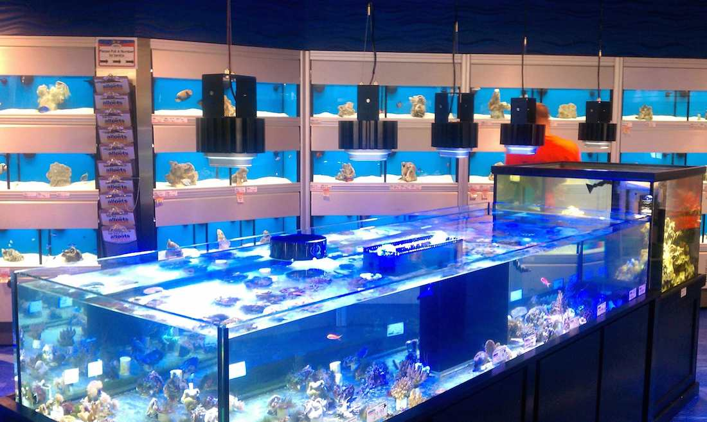

We offer Freshwater, Marine and Pond Fish
Free Shipping on Orders Over $225
Check out our new state of the art facility!
Fish and Aquariums
Here at Pete's Tropical Fish, rooted on the west coast and lovingly grown in Fresno, California, our goal is to make the aquarium hobby fun and accessible to everyone. We pride ourselves in providing only the best fish and aquarium supplies. We want you to have a positive experience with your fish, be it a bowl setup or a 200 gallon aquarium.
What We Offer
We offer one of the largest collections of African Cichlids in the United States, an amazing assortment of Discus (including Wild types), large selection of Catfish, Loaches, Tetras, Barbs, Danios, Rainbowfish, Gobies, Eels and Rasboras) and a gorgeous seasonal selection of freshwater Puffers.
Our Staff Aims to Please
Our staff members all enjoy fish at their homes, and because of this our team has a lot of hands-on practical knowledge about how to operate and maintain aquariums. We have a friendly and knowledgeable staff, and we strive to form long-lasting relationships with our clients.